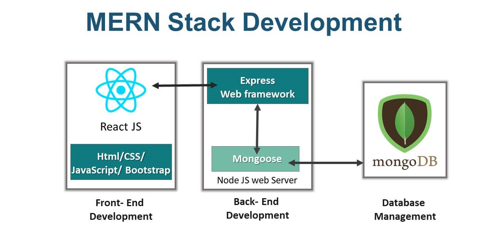
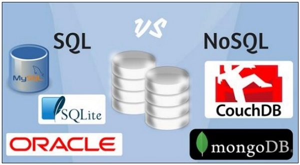
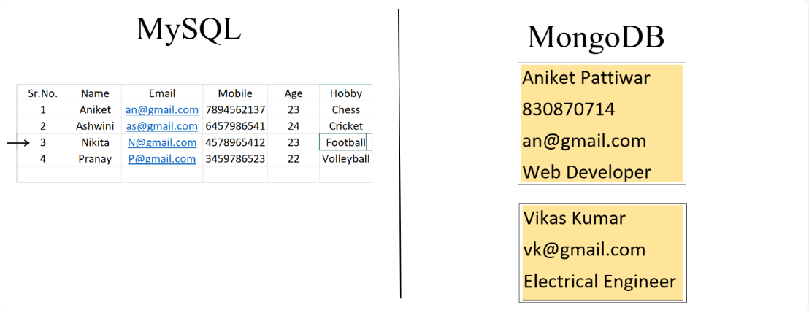
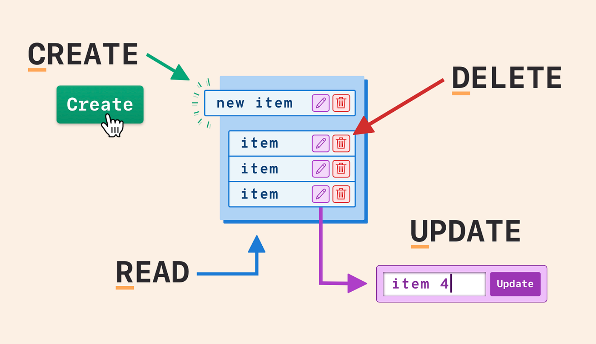
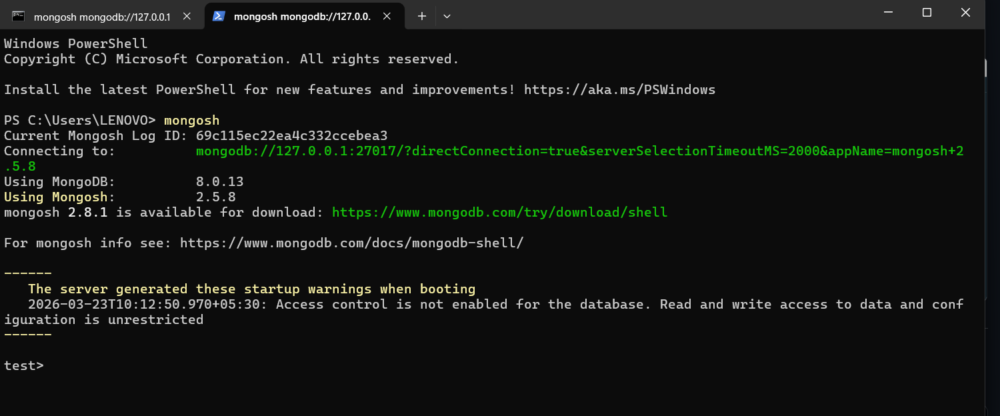
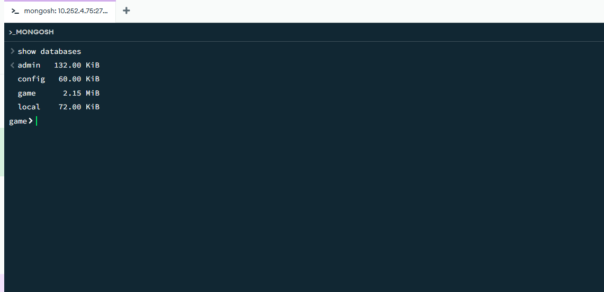

Introduce MongoDB, Node.js, Express.js, React and the practical relevance of these technologies.
Familiarity with any RDBMS (like SQL) and Web Programming Fundamentals (HTML, CSS, JavaScript).
The MERN stack is a popular and powerful collection of technologies used to build full-stack web applications.
Together, these components allow you to build a three-tier architecture (frontend, backend, database) entirely with JavaScript and JSON.
How the parts connect:

Which four technologies form the MERN full-stack development suite and what are their roles?
Simulate request & response flow in MERN stack.
What is the standard path of communication when a user clicks a button to view records in a MERN application?
Visual Studio Code.app to your
/Applications folder.
.deb (for Debian/Ubuntu) or
.rpm (for Fedora/RHEL) package and install
it. Alternatively, use Snap:
sudo snap install --classic code.
nvm install --lts.
brew tap mongodb/brew followed by
brew install mongodb-community.
apt package manager.
For all operating systems (Windows, macOS, Linux), go to the Postman downloads page, download the appropriate version, and install it.
For Windows, macOS, and Linux.
code --version
node -v
npm -v
mongod --version


MySQL databases → use SQL
SELECT * FROM users WHERE age > 25;
MongoDB → uses MQL (JSON-style queries)
db.users.find({ age: { $gt: 25 } })
What distinguishes a NoSQL document database like MongoDB from a traditional SQL database like MySQL?

This is a command-line application. It's great for server management and scripting.

Compass is a GUI tool that includes a built-in shell at the bottom. It's convenient for running quick queries while visually exploring your data.

- show dbs
- use "db_name"
- db.createCollection("collection_name")insertOne(
{key1:"value1", key2:"value2" }
)insertMany([
{ key1:"value1", key2:"value2" },
{ key1:"value1", key2:"value2" , key3:"value3" },
{ key1:"value1", key2:"value2" , key3:"value3" },
{ key1:"value1", key2:"value2" , key3:"value3", key4: "value4" }
]);
- find()
- find({ keyname: "value" })
- updateOne(
{ key: "value" },
{ $set: { key: "newvalue" } }
)
- deleteOne({ key: "value" })
- countDocuments()// mongosh_crud_demo.js - Complete runnable script for mongosh
use schoolDB;
// 1. Create (Insert Documents)
db.students.insertOne({ name: "Alex Kumar", course: "MERN", score: 92, enrolled: true });
db.students.insertMany([
{ name: "Priya Sharma", course: "React", score: 88, enrolled: true },
{ name: "Rohan Verma", course: "Node.js", score: 76, enrolled: false },
{ name: "Sneha Patel", course: "MERN", score: 95, enrolled: true }
]);
// 2. Read (Find with filter and projection)
print("=== High Scoring MERN Students ===");
db.students.find(
{ course: "MERN", score: { $gte: 90 } },
{ name: 1, score: 1, _id: 0 }
);
// 3. Update (Modify record)
db.students.updateOne(
{ name: "Rohan Verma" },
{ $set: { enrolled: true, score: 82 } }
);
// 4. Count & Verify
print("=== Total Enrolled Students ===");
db.students.countDocuments({ enrolled: true });insertOne and insertMany to write records, find() with query projection to fetch data, and updateOne() with $set operator.
mongosh and hit Enter to connect to your local MongoDB instance.mongosh prompt and hit Enter.=== High Scoring MERN Students === { name: 'Alex Kumar', score: 92 } ... Total Enrolled: 4
In the MongoDB shell (mongosh), which command is used to insert a single document into a collection called "students"?